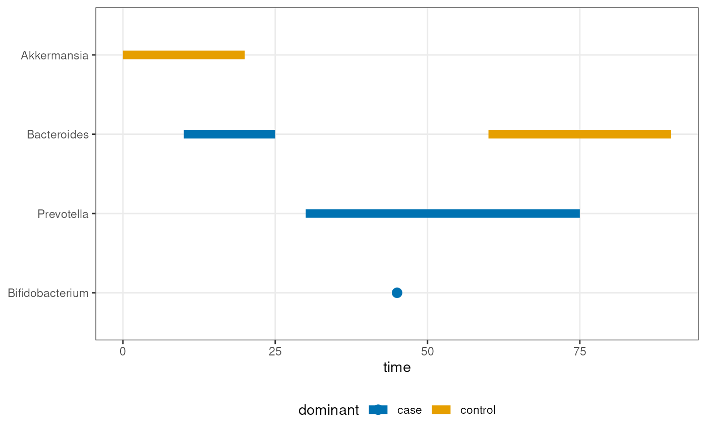

Plot time intervals of features
Source:R/AllGenerics.R, R/plotIntervals.R, R/zzz-mae.R
plotIntervals.RdplotIntervals() draws time intervals of each feature as
horizontal bars, such as the intervals in which a feature differs
between groups.
Usage
plotIntervals(x, ...)
# S4 method for class 'SummarizedExperiment'
plotIntervals(x, name, ...)
# S4 method for class 'data.frame'
plotIntervals(
x,
feature.col = "feature",
colour.by = NULL,
facet.by = NULL,
features = NULL,
top = 20,
...
)
# S4 method for class 'MultiAssayExperiment'
plotIntervals(x, ..., experiment = 1L)Arguments
- x
a
data.frameof intervals, one row per interval with columnsstartandend, or aSummarizedExperimentobject with such a table in itsmetadata.- ...
additional arguments passed to
geom_segment.- name
Character scalar. Specifies the entry ofmetadata(x)holding the intervals.- feature.col
Character scalar. Specifies the column of feature names. (Default:"feature")- colour.by
Character scalar. Specifies the column that colours the intervals, such as the group with the higher values. (Default:NULL)- facet.by
Character scalar. Specifies the column that splits the intervals into panels, such as the method that found them. (Default:NULL)- features
Character vector. Features to plot. IfNULL, plots thetopfeatures with the longest total time in intervals. (Default:NULL)- top
Integer scalar. Number of features to plot whenfeaturesisNULL. (Default:20)- experiment
Character scalarorinteger scalar. For aMultiAssayExperiment, the experiment to plot; its samples get thecolDataofx. (Default:1L)
Details
start and end are numeric, Date, POSIXct or
factors of visits with the same levels. An interval with end
equal to start, or missing, covers one time point and is drawn as
a point. Features are ordered by the start of their first interval, the
earliest at the top.
The columns feature, start, end and
dominant match the significant intervals returned by MetaLonDA
(Metwally et al. 2018, doi:10.1186/s40168-018-0402-y); intervals from
SplinectomeR or from comparisons of fitted curves can be given in the
same form.
Examples
# Illustrative significant intervals in the form returned by MetaLonDA:
# days in which each genus differs between two groups, and the group
# with the higher abundance
intervals <- data.frame(
feature = c("Bacteroides", "Bacteroides", "Prevotella",
"Akkermansia", "Bifidobacterium"),
start = c(10, 60, 30, 0, 45),
end = c(25, 90, 75, 20, 45),
dominant = c("case", "control", "case", "control", "case"))
plotIntervals(intervals, colour.by = "dominant")
 # The same intervals stored in metadata(tse)
data("minimalgut", package = "miaTime")
tse <- minimalgut
S4Vectors::metadata(tse)$intervals <- intervals
plotIntervals(tse, name = "intervals", colour.by = "dominant")
# The same intervals stored in metadata(tse)
data("minimalgut", package = "miaTime")
tse <- minimalgut
S4Vectors::metadata(tse)$intervals <- intervals
plotIntervals(tse, name = "intervals", colour.by = "dominant")
